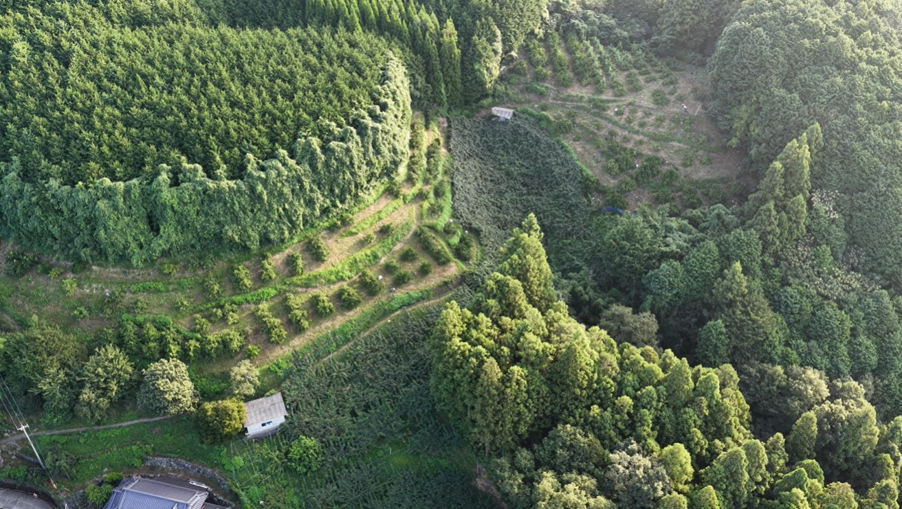
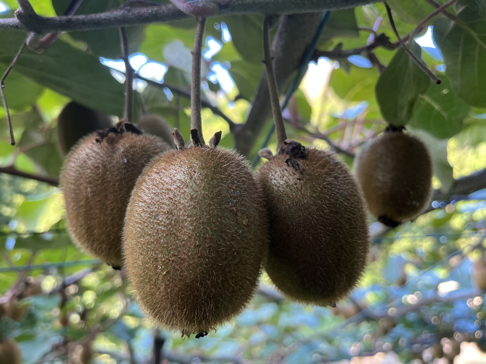

30
年の
歴史
歴史
ABOUT US
この土地で
続けて30年
大洲の自然とともに歩んできた30年。土づくりからこだわり、安心・安全で本当においしいキウイを育てています。
各種農業賞も受賞し、これからも皆さまに笑顔をお届けします。発酵竹チップを活用した独自の土壌改良で、環境にも人にも優しいキウイを栽培しています。
農園について詳しく見る →
瀬戸内の温暖な気候と豊かな自然が生んだ、
栄養たっぷりの大洲のキウイをお届けします。
愛媛県はキウイの生産量
30年連続全国1位！
瀬戸内の温暖な気候と
潮風で育まれたキウイ
ビタミンCがレモンより多く、
美肌づくりにもおすすめ
発酵竹チップを使用し、
環境に配慮した栽培
大洲の自然とともに歩んできた30年。土づくりからこだわり、安心・安全で本当においしいキウイを育てています。
各種農業賞も受賞し、これからも皆さまに笑顔をお届けします。発酵竹チップを活用した独自の土壌改良で、環境にも人にも優しいキウイを栽培しています。
農園について詳しく見る →幹に一番近い位置にある、甘くておいしい大玉サイズのキウイを厳選してお届けします。

幹に一番近い位置にできる甘くておいしい「扁平」の大玉サイズのみを厳選してお届けします。
固いキウイはリンゴやバナナと一緒に袋に入れて常温で2〜3日。エチレンガスで甘く熟します。
軽く押してやわらかく弾力があれば食べ頃。甘い香りもサインです。
未熟なものは常温保存。熟れたらポリ袋に入れて冷蔵庫へ。約1週間が目安です。
半分に切ってスプーンで食べるのが最もシンプル。スムージーやケーキのトッピングにも最高です。
愛媛県大洲市 ○○町○○番地
松山自動車道 大洲ICより約15分
JR予讃線 伊予大洲駅よりタクシーで約20分
0893-XX-XXXX（受付時間 9:00〜17:00）
ご注文・ご質問はお気軽にどうぞ。通常2営業日以内にご返信いたします。